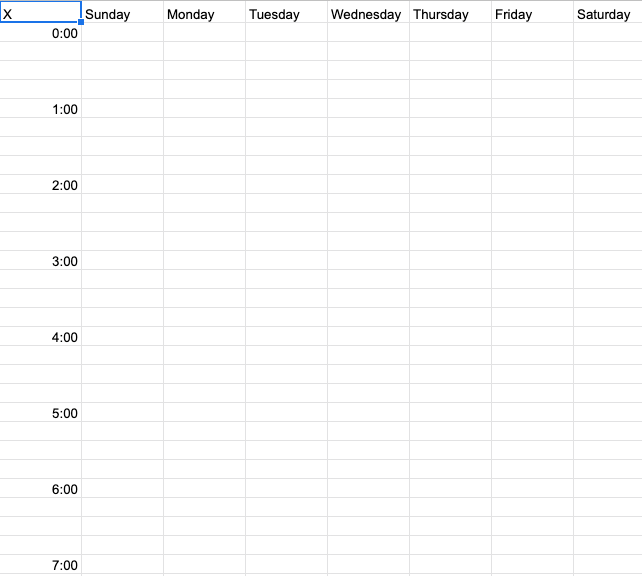

Here a schedule showing only class times and professor office hours will be presented. No opportunity has been given to enter any other scheduling data. I'm not totally sure what I'll use to show the schedule, but an overlay of some kind may work well enough for our purposes, but creating a printable method may be the issue. There, the involvement of something like a spreadsheet program operating off of copies of a base file may work, but it is a solution that I'll have to find over the course of the semester. For the time-being, I've inserted a picture of a graph based schedule representation.
